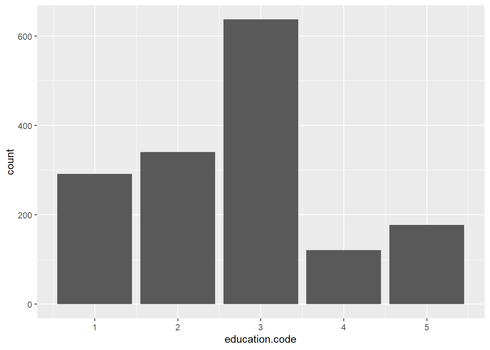
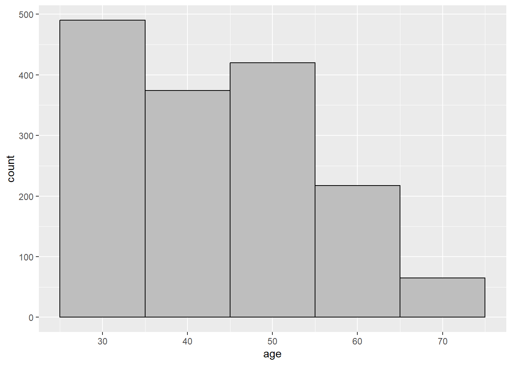
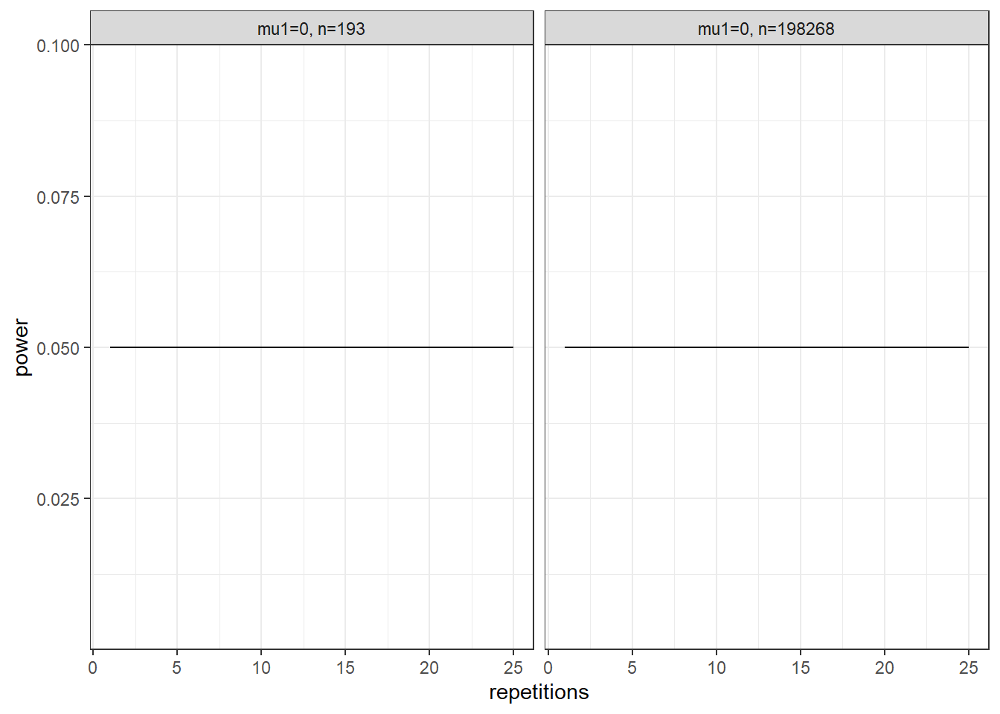

library(tidyverse)
library(scidesignR)
library(knitr)
library(kableExtra)
library(countrycode)
library(skimr)
library(scidesignR)
library(tidyMC)
set.seed(4240)Design and Analysis of Experiments and Observational Studies using R – A textbook workbook
Setup Stuff
Chapter 1
CHAPTER 2
Example 2.1
nhefshwdat1_filepath <-
scidesignR::scidesignR_example("nhefshwdat1.csv")
nhefsdf <- read.csv(nhefshwdat1_filepath)
head(nhefsdf[1:6], n = 3) X seqn age sex race education.code
1 1 233 42 0 1 1
2 2 235 36 0 0 2
3 3 244 56 1 1 2colnames(nhefsdf) [1] "X" "seqn" "age" "sex"
[5] "race" "education.code" "smokeintensity" "smokeyrs"
[9] "exercise" "active" "wt71" "qsmk"
[13] "wt82_71" "pqsmkobs" "strat1" "strat2"
[17] "strat3" "strat4" "strat5" "stratvar" Example 2.2
levels(as.factor(nhefsdf$education.code))[1] "1" "2" "3" "4" "5"edcode <- dplyr::recode(
as.factor(nhefsdf$education.code),
"5" = 1,
"4" = 1,
"3" = 0,
"2" = 0,
"1" = 0
)
levels(as.factor(edcode))[1] "0" "1"nhefsdf %>%
count(education.code) %>%
mutate(pct = round(n/sum(n)*100,2)) education.code n pct
1 1 291 18.58
2 2 340 21.71
3 3 637 40.68
4 4 121 7.73
5 5 177 11.30summarise(
nhefsdf,
N = n(),
mean = mean(age),
median = median(age),
sd = sd(age)
) N mean median sd
1 1566 43.65964 43 11.98981barpl <- nhefsdf %>%
ggplot(aes(education.code)) +
geom_bar()
barpl
histpl <- nhefsdf %>%
ggplot(aes(age)) +
geom_histogram(binwidth = 10, colour = "black", fill = "grey")
histpl
Example 2.3
set.seed(11)
gendf <- data.frame(trt = sample(c(rep("trt1", 5), rep("trt2", 5))),
value = sample(1:1000000, 10))
head(gendf, n = 3) trt value
1 trt2 387134
2 trt1 900071
3 trt2 883541Example 2.4
set.seed(11)
expand.grid(subj = 1:3, treat = c("A", "B", "C")) %>%
mutate(run_order = sample(1:9)) %>%
arrange(run_order) %>%
head(n = 3) subj treat run_order
1 3 A 1
2 1 A 2
3 2 C 3CHAPTER 3
Example 3.3
caff <- rtdat$rt[rtdat$group == "CAFF"]
ncaff <- rtdat$rt[rtdat$group == "NOCAFF"]
rt1 <- c(caff, ncaff)
N <- 10000
result <- numeric(N)
for (i in 1:N) {
index <- sample(length(rt1),
size = length(caff),
replace = FALSE)
result[i] <- median(rt1[index]) - median(rt1[-index])
}
observed <- median(caff) - median(ncaff)
phatval <- (sum(result >= observed) + 1) / (N + 1)
phatval[1] 0.0039996#> [1] 0.0038test_func <- function(param = 0.1, n = 100, x1 = 1, x2 = 2){
data <- rnorm(n, mean = param) + x1 + x2
stat <- mean(data)
stat_2 <- var(data)
if (x2 == 5){
stop("x2 can't be 5!")
}
return(list(mean = stat, var = stat_2))
}
param_list <- list(param = seq(from = 0, to = 1, by = 0.5),
x1 = 1:2)
set.seed(101)
test_mc <- future_mc(
fun = test_func,
repetitions = 1000,
param_list = param_list,
n = 10,
x2 = 2,
check = TRUE
)Running single test-iteration for each parameter combination...
Test-run successfull: No errors occurred!Running whole simulation: Overall 6 parameter combinations are simulated ...
Simulation was successfull!
Running time: 00:00:00.35705power_ztest_mc <- function(alpha = 0.05, mu1, mu0, sigma, n) {
# Data Generation
arg1 <- qnorm(1 - alpha / 2) - (mu1 - mu0) / (sigma / sqrt(n))
arg2 <- -1 * qnorm(1 - alpha / 2) -
(mu1 - mu0) / (sigma / sqrt(n))
# Application of the method
power <- (1 - pnorm(arg1) + pnorm(arg2))
# Evaluation of the result for a single repetition and parameter combination
return(list(power = power))
}
param_list_power_ztest_mc <-
list(
mu1 = seq(from = 0.15, to = 0, by = -0.01),
n = as.integer(30 + (0:10)*exp(1:11))
)
set.seed(101)
test_power_ztest_mc <- future_mc(
fun = power_ztest_mc,
repetitions = 25,
param_list = param_list_power_ztest_mc,
alpha = 0.05,
mu0 = 0,
sigma = 0.2,
check = TRUE
)Running single test-iteration for each parameter combination...
Test-run successfull: No errors occurred!Running whole simulation: Overall 176 parameter combinations are simulated ...
Simulation was successfull!
Running time: 00:00:00.138827summary_default <- summary(test_power_ztest_mc)
summary_defaultResults for the output power:
mu1=0, n=193: 0.05
mu1=0, n=198268: 0.05
mu1=0, n=2047: 0.05
mu1=0, n=20896: 0.05
mu1=0, n=30: 0.05
mu1=0, n=37: 0.05
mu1=0, n=598771: 0.05
mu1=0, n=623: 0.05
mu1=0, n=64854: 0.05
mu1=0, n=6609: 0.05
mu1=0, n=70: 0.05
mu1=0.00999999999999998, n=193: 0.1068447
mu1=0.00999999999999998, n=198268: 1
mu1=0.00999999999999998, n=2047: 0.6187719
mu1=0.00999999999999998, n=20896: 0.9999999
mu1=0.00999999999999998, n=30: 0.0586353
mu1=0.00999999999999998, n=37: 0.06066246
mu1=0.00999999999999998, n=598771: 1
mu1=0.00999999999999998, n=623: 0.2389114
mu1=0.00999999999999998, n=64854: 1
mu1=0.00999999999999998, n=6609: 0.9823467
mu1=0.00999999999999998, n=70: 0.07027776
mu1=0.02, n=193: 0.2845001
mu1=0.02, n=198268: 1
mu1=0.02, n=2047: 0.9948325
mu1=0.02, n=20896: 1
mu1=0.02, n=30: 0.08501566
mu1=0.02, n=37: 0.09334843
mu1=0.02, n=598771: 1
mu1=0.02, n=623: 0.7040362
mu1=0.02, n=64854: 1
mu1=0.02, n=6609: 1
mu1=0.02, n=70: 0.1332362
mu1=0.03, n=193: 0.5493301
mu1=0.03, n=198268: 1
mu1=0.03, n=2047: 0.9999993
mu1=0.03, n=20896: 1
mu1=0.03, n=30: 0.1301859
mu1=0.03, n=37: 0.1494601
mu1=0.03, n=598771: 1
mu1=0.03, n=623: 0.9627907
mu1=0.03, n=64854: 1
mu1=0.03, n=6609: 1
mu1=0.03, n=70: 0.2410656
mu1=0.04, n=193: 0.7934723
mu1=0.04, n=198268: 1
mu1=0.04, n=2047: 1
mu1=0.04, n=20896: 1
mu1=0.04, n=30: 0.1947752
mu1=0.04, n=37: 0.2293616
mu1=0.04, n=598771: 1
mu1=0.04, n=623: 0.9987854
mu1=0.04, n=64854: 1
mu1=0.04, n=6609: 1
mu1=0.04, n=70: 0.3873324
mu1=0.05, n=193: 0.9348789
mu1=0.05, n=198268: 1
mu1=0.05, n=2047: 1
mu1=0.05, n=20896: 1
mu1=0.05, n=30: 0.2778103
mu1=0.05, n=37: 0.3304818
mu1=0.05, n=598771: 1
mu1=0.05, n=623: 0.9999907
mu1=0.05, n=64854: 1
mu1=0.05, n=6609: 1
mu1=0.05, n=70: 0.5524091
mu1=0.06, n=193: 0.9863698
mu1=0.06, n=198268: 1
mu1=0.06, n=2047: 1
mu1=0.06, n=20896: 1
mu1=0.06, n=30: 0.3758563
mu1=0.06, n=37: 0.4463294
mu1=0.06, n=598771: 1
mu1=0.06, n=623: 1
mu1=0.06, n=64854: 1
mu1=0.06, n=6609: 1
mu1=0.06, n=70: 0.7088497
mu1=0.07, n=193: 0.9981484
mu1=0.07, n=198268: 1
mu1=0.07, n=2047: 1
mu1=0.07, n=20896: 1
mu1=0.07, n=30: 0.4829295
mu1=0.07, n=37: 0.5671245
mu1=0.07, n=598771: 1
mu1=0.07, n=623: 1
mu1=0.07, n=64854: 1
mu1=0.07, n=6609: 1
mu1=0.07, n=70: 0.8335647
mu1=0.08, n=193: 0.9998391
mu1=0.08, n=198268: 1
mu1=0.08, n=2047: 1
mu1=0.08, n=20896: 1
mu1=0.08, n=30: 0.5913305
mu1=0.08, n=37: 0.6819493
mu1=0.08, n=598771: 1
mu1=0.08, n=623: 1
mu1=0.08, n=64854: 1
mu1=0.08, n=6609: 1
mu1=0.08, n=70: 0.9172298
mu1=0.09, n=193: 0.9999911
mu1=0.09, n=198268: 1
mu1=0.09, n=2047: 1
mu1=0.09, n=20896: 1
mu1=0.09, n=30: 0.6931508
mu1=0.09, n=37: 0.7815043
mu1=0.09, n=598771: 1
mu1=0.09, n=623: 1
mu1=0.09, n=64854: 1
mu1=0.09, n=6609: 1
mu1=0.09, n=70: 0.9644631
mu1=0.1, n=193: 0.9999997
mu1=0.1, n=198268: 1
mu1=0.1, n=2047: 1
mu1=0.1, n=20896: 1
mu1=0.1, n=30: 0.781908
mu1=0.1, n=37: 0.8602445
mu1=0.1, n=598771: 1
mu1=0.1, n=623: 1
mu1=0.1, n=64854: 1
mu1=0.1, n=6609: 1
mu1=0.1, n=70: 0.9869034
mu1=0.11, n=193: 1
mu1=0.11, n=198268: 1
mu1=0.11, n=2047: 1
mu1=0.11, n=20896: 1
mu1=0.11, n=30: 0.8537175
mu1=0.11, n=37: 0.9170587
mu1=0.11, n=598771: 1
mu1=0.11, n=623: 1
mu1=0.11, n=64854: 1
mu1=0.11, n=6609: 1
mu1=0.11, n=70: 0.995875
mu1=0.12, n=193: 1
mu1=0.12, n=198268: 1
mu1=0.12, n=2047: 1
mu1=0.12, n=20896: 1
mu1=0.12, n=30: 0.9076417
mu1=0.12, n=37: 0.9544567
mu1=0.12, n=598771: 1
mu1=0.12, n=623: 1
mu1=0.12, n=64854: 1
mu1=0.12, n=6609: 1
mu1=0.12, n=70: 0.9988933
mu1=0.13, n=193: 1
mu1=0.13, n=198268: 1
mu1=0.13, n=2047: 1
mu1=0.13, n=20896: 1
mu1=0.13, n=30: 0.9452265
mu1=0.13, n=37: 0.9769148
mu1=0.13, n=598771: 1
mu1=0.13, n=623: 1
mu1=0.13, n=64854: 1
mu1=0.13, n=6609: 1
mu1=0.13, n=70: 0.9997477
mu1=0.14, n=193: 1
mu1=0.14, n=198268: 1
mu1=0.14, n=2047: 1
mu1=0.14, n=20896: 1
mu1=0.14, n=30: 0.9695413
mu1=0.14, n=37: 0.9892182
mu1=0.14, n=598771: 1
mu1=0.14, n=623: 1
mu1=0.14, n=64854: 1
mu1=0.14, n=6609: 1
mu1=0.14, n=70: 0.9999512
mu1=0.15, n=193: 1
mu1=0.15, n=198268: 1
mu1=0.15, n=2047: 1
mu1=0.15, n=20896: 1
mu1=0.15, n=30: 0.9841413
mu1=0.15, n=37: 0.9953674
mu1=0.15, n=598771: 1
mu1=0.15, n=623: 1
mu1=0.15, n=64854: 1
mu1=0.15, n=6609: 1
mu1=0.15, n=70: 0.999992
mc_ols_plot <- plot(summary(test_power_ztest_mc),
which_setup = test_power_ztest_mc$nice_names[1:2])
df_output <- as_tibble(test_power_ztest_mc$output)
df_output_grouped <- df_output %>% group_by(params)
df_output_grouped %>%
select(power) %>%
summarize(
n = n(), mean=mean(power), median(power), min(power), max(power)
)Adding missing grouping variables: `params`# A tibble: 176 × 6
params n mean `median(power)` `min(power)` `max(power)`
<chr> <int> <dbl> <dbl> <dbl> <dbl>
1 mu1=0, n=193 25 0.0500 0.0500 0.0500 0.0500
2 mu1=0, n=198268 25 0.0500 0.0500 0.0500 0.0500
3 mu1=0, n=2047 25 0.0500 0.0500 0.0500 0.0500
4 mu1=0, n=20896 25 0.0500 0.0500 0.0500 0.0500
5 mu1=0, n=30 25 0.0500 0.0500 0.0500 0.0500
6 mu1=0, n=37 25 0.0500 0.0500 0.0500 0.0500
7 mu1=0, n=598771 25 0.0500 0.0500 0.0500 0.0500
8 mu1=0, n=623 25 0.0500 0.0500 0.0500 0.0500
9 mu1=0, n=64854 25 0.0500 0.0500 0.0500 0.0500
10 mu1=0, n=6609 25 0.0500 0.0500 0.0500 0.0500
# ℹ 166 more rows